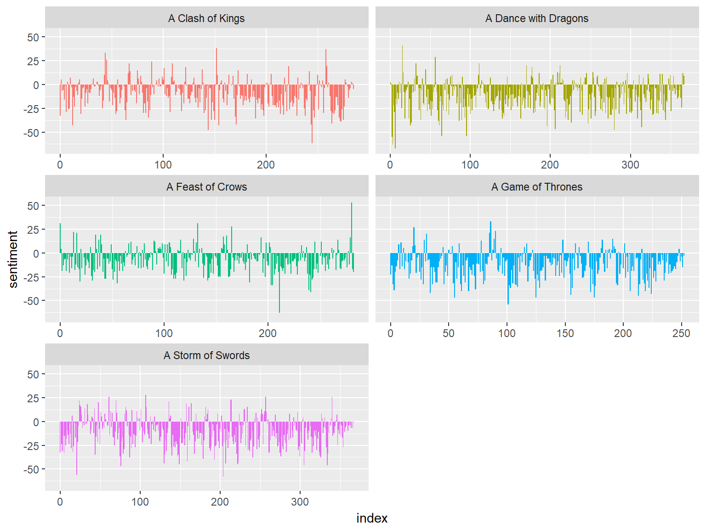
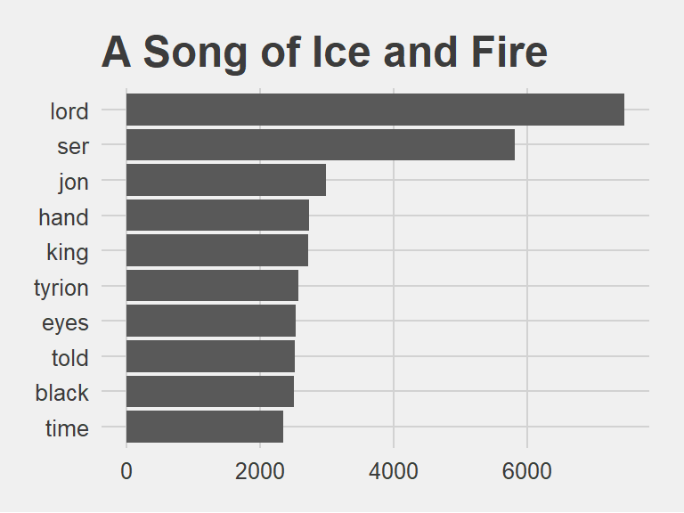

2018.23.02
Let’s have a look at Game of Thrones, 5 huge volumes
library(gutenbergr)
library(stringr)
library(plyr)
library(tidytext)
library(ggplot2)
library(ggthemes)
library(gridExtra)
library(scales)
library(broom)
library(purrr)GoT1 <- readLines("GoT1.txt") %>%
as.data.frame() %>%
mutate(title = "A Game of Thrones")
GoT2 <- readLines("GoT2.txt") %>%
as.data.frame() %>%
mutate(title = "A Clash of Kings")
GoT3 <- readLines("GoT3.txt") %>%
as.data.frame() %>%
mutate(title = "A Storm of Swords")
GoT4 <- readLines("GoT4.txt") %>%
as.data.frame() %>%
mutate(title = "A Feast of Crows")
GoT5 <- readLines("GoT5.txt") %>%
as.data.frame() %>%
mutate(title = "A Dance with Dragons")
library(dplyr)
Thrones <- bind_rows(list(GoT1, GoT2, GoT3, GoT4, GoT5))
colnames(Thrones) <- c("text", "title")Convert to Tidy format
Tidy_Thrones <- Thrones %>%
unnest_tokens(word, text) %>%
anti_join(stop_words)Have a look at the top 10 words in these books
Tidy_Thrones %>%
count(word, sort = TRUE) %>%
head(10)Looks like lots of lords, sirs and ladies around Jon Snow and Tyrion Lennister :)
Tidy_Thrones %>%
count(word, sort = TRUE) %>%
filter(n > 2300) %>%
mutate(word = reorder(word, n)) %>%
ggplot(aes(word, n)) + geom_col() + xlab(NULL) + coord_flip() +
ggtitle("A Song of Ice and Fire") +
theme_fivethirtyeight()
Now lets see tf-idf to see the most important words in these books.
Tidy_Thrones <- Tidy_Thrones %>%
anti_join(stop_words) %>%
count(title, word, sort = TRUE) %>%
ungroup()
Tidy_Thrones_total_words <- Tidy_Thrones %>%
group_by(title) %>%
summarize(total = sum(n))
Tidy_Thrones <- left_join(Tidy_Thrones, Tidy_Thrones_total_words)Tidy_Thrones <- Tidy_Thrones %>%
bind_tf_idf(word, title, n)
head(Tidy_Thrones)## # A tibble: 6 x 7
## title word n total tf idf tf_idf
## <chr> <chr> <int> <int> <dbl> <dbl> <dbl>
## 1 A Storm of Swords lord 1880 163031 0.0115 0 0
## 2 A Dance with Dragons lord 1541 168861 0.00913 0 0
## 3 A Feast of Crows lord 1473 123616 0.0119 0 0
## 4 A Storm of Swords ser 1468 163031 0.00900 0 0
## 5 A Clash of Kings lord 1420 126874 0.0112 0 0
## 6 A Feast of Crows ser 1391 123616 0.0113 0 0Tidy_Thrones %>%
select(-total) %>%
arrange(desc(tf_idf)) %>%
head()## # A tibble: 6 x 6
## title word n tf idf tf_idf
## <chr> <chr> <int> <dbl> <dbl> <dbl>
## 1 A Dance with Dragons griff 175 0.00104 1.61 0.00167
## 2 A Feast of Crows king’s 219 0.00177 0.916 0.00162
## 3 A Dance with Dragons king’s 285 0.00169 0.916 0.00155
## 4 A Dance with Dragons hizdahr 231 0.00137 0.916 0.00125
## 5 A Feast of Crows hyle 88 0.000712 1.61 0.00115
## 6 A Feast of Crows don’t 147 0.00119 0.916 0.00109Tidy_Thrones %>%
arrange(desc(tf_idf)) %>%
mutate(word = factor(word, levels = rev(unique(word)))) %>%
group_by(title) %>%
top_n(10) %>%
ungroup %>%
ggplot(aes(word, tf_idf, fill = title)) +
geom_col(show.legend = FALSE) +
labs(x = NULL, y = "tf-idf") +
facet_wrap(~title, ncol = 2, scales = "free") +
theme_fivethirtyeight() + ggtitle("A Song of Ice and Fire") +
coord_flip()
Looks like I will need to do a bit cleaning :)
2018.22.02 A few days ago, I learnt that it is possible to keep a blog up and running using Github and RStudio from our instructor Eduardo Ariño de la Rubia.